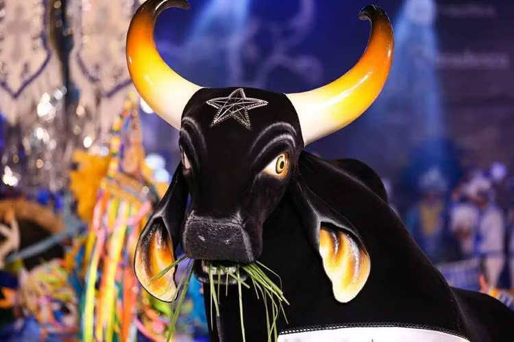

About
The Boi-Bumbá Caprichoso Cultural Association, known as Boi Caprichoso, is the boi-bumbá that competes annually in the Parintins Folklore Festival, in Amazonas. It is considered the ox of innovation, responsible for much of the aesthetic and musical transformations of what is considered one of the most important popular and cultural festivals in Brazil.
